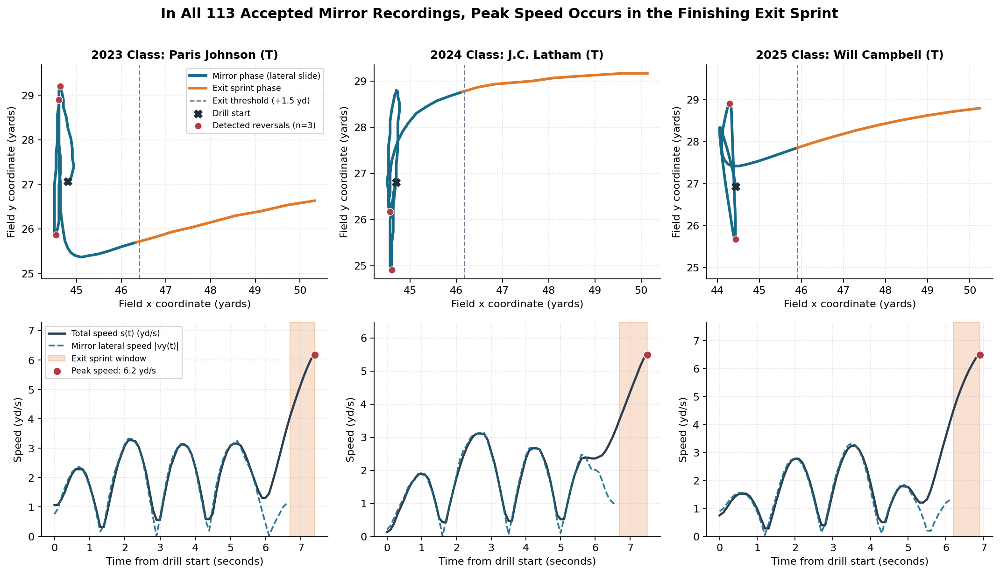
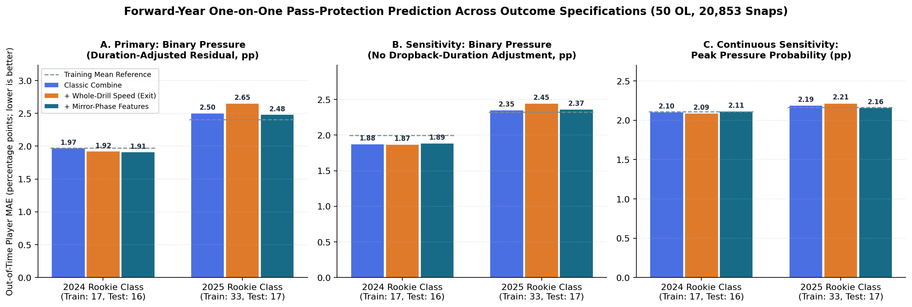

En Hızlı Kısım Çıkış Sprinti:
OL Combine Faz Ayrıştırması ve 4-Aşamalı Doğrulama Hunisi
Ana teslim adayı (submission_mirror): 3 OL drilinde 470 kayıt, 2-tekrar güvenilirlik sınırı, ikili + sürekli NGS baskı olasılığı modelleri ve iki dilli (TR/EN) etkileşimli inceleyici ile tam doğrulandı.
1. Evrensel Ölçüm Tuzağı (470 / 470 Kayıtta %100 Çıkış Sprinti Baskınlığı)
Yalnızca Pass-Pro Mirror Drill (113/113) değil, tüm OL ayak işi drillerinde — 5-Yard Wave Drill (118/118) ve Pass Rush Drop (239/239) dahil toplam 470 kaydın tamamında (%100.0) — en yüksek hız yanal koruma/ayak işi fazında değil, dril sonundaki düz koşu (çıkış sprinti) fazında oluşmaktadır.
Tüm kayıt hızına göre sıralama ile yanal ayna fazı hızına göre sıralama neredeyse diktir (Mirror r = +0.005, Wave r = −0.022, Drop r = +0.147). 2025 sınıfında üst çeyrekteki dokuz oyuncudan yalnız biri ortaktır.


2. Tekrar Güvenilirliği ve Maç Performansı Doğrulaması
Neden tek tekrarlı dril metrikleri maç tahmininde sınırlı kalıyor? İkişer kez koşulan Pass Rush Drop drilinde (118 OL çifti) çıkış sprinti hızı r = +0.510 tekrar güvenilirliğine sahipken, koç/işaret yönlendirmeli yanal pas seti hızı yalnızca r = +0.104 tekrar güvenilirliğine sahiptir (psikometrik zayıflama sınırı).
Hem ikili pressure_allowed (yarı-yarıya maç güvenilirliği r = 0.367) hem de sürekli NGS peak_pressure_probability_allowed (yarı-yarıya maç güvenilirliği r = 0.696) hedeflerinde, çıkış sprintiyle kirlenmiş tüm-kayıt hızı 2025 tahmin hatasını kötüleştirirken, faz ayrıştırmalı mirror özellikleri hatayı küçük miktarda düşürmekte fakat klasik Combine testlerine (40-yard, 10-yard split, kilo, kol boyu) göre istatistiksel olarak anlamlı bir üstünlük sağlamamaktadır (2025 tam yeniden eğitimli %95 GA: [−0.264, +0.353] yüzde puan).

Dosyalar ve Teslim Paketleri
- Ana İngilizce Yarışma Raporu (submission_mirror/writeup_en.md)
- Çalıştırılmış ve Doğrulanmış Kaggle Notebook
- İki Dilli (TR/EN) Etkileşimli Oyuncu Faz İnceleyicisi
- Ayrıntılı Türkçe Teknik Rapor
- Tüm Pozisyonlar (WR/TE/OL/DL/DB) Deney Kayıt Defteri
- Genel Proje Durumu ve Metodolojik Özet
- Tam Teslim Paketi (ZIP)